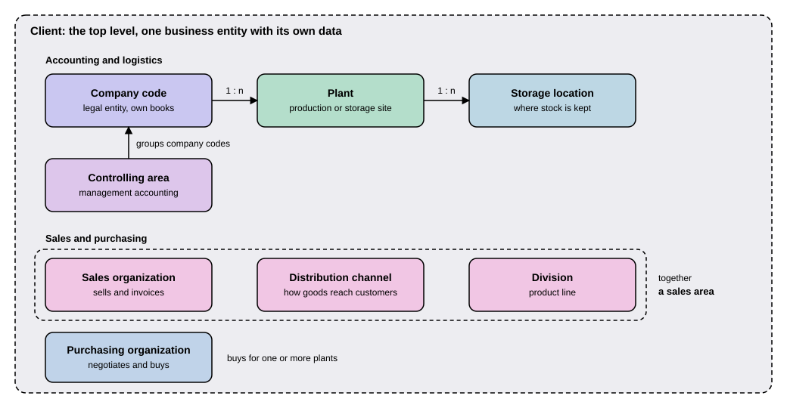

Organizational Structures
|
This content was generated with the assistance of AI and should be verified against the official documentation before being relied on in production. |
Before an SAP system can post a single invoice or move a single pallet of goods, it has to know what the business looks like: which legal companies exist, where goods are produced and stored, who sells and who buys. SAP calls this picture the enterprise structure, and every unit in it is an organizational unit. You can think of it as the map of a company drawn in the system: the company code is a separate set of books kept for one legal company, a plant is a site where things are made or kept, and a sales organization is the team that sells. A newcomer meets these units in nearly every SAP screen, because almost every document and every master data record carries a company code, a plant or a sales organization. This page explains what each unit is, which units may be assigned to which (the cardinality rules, that is, how many of one unit belong to one of another), and where the structure is defined. It is written against SAP S/4HANA 2025 FPS02 (on premise and Private Edition) and SAP S/4HANA Cloud Public Edition 2608. The units and their rules are the same in both; what differs is the tool that defines them, described in the section on defining the structure below.
Before you read
-
Getting Started: what an SAP system is and how you log on to one client of it.
Key terms
-
Enterprise structure: the set of organizational units of one SAP system and the assignments between them.
-
Client: the highest level of the structure, a self-contained unit with its own master data and its own set of tables.
-
Company code: the smallest unit of external accounting that can keep a complete, self-contained set of books.
-
Controlling area: the unit in which costs and revenues are analyzed for management accounting.
-
Plant: a logistics unit for production, procurement, maintenance and materials planning.
-
Storage location: the unit that separates material stocks inside a plant.
-
Sales area: the combination of a sales organization, a distribution channel and a division.
-
Purchasing organization: the unit that buys materials and services and negotiates conditions with suppliers.
A picture of the structure
The figure shows the units covered on this page. The dashed outer frame is the client. Inside it, a company code contains plants and a plant contains storage locations, a controlling area groups company codes for management accounting, and the three sales units together form a sales area. The purchasing organization buys for plants.

The figure draws the rules that are always true as arrows. Where a rule has exceptions or conditions, such as the assignment of a sales organization or a purchasing organization to a company code, this page states it in words. The sections below follow the same order: first the accounting units, then the logistics units, then the sales and purchasing units, and last the table of all rules.
The running example: Example Trading Co.
This site uses one fictitious business to make the units concrete: Example Trading Co. It has one company code, EX01,
for the legal company, one controlling area, EX00, for management accounting, and one plant, EX10, a warehouse in
which it receives and ships goods. The keys are illustrative values chosen for this site; a real system defines its own.
The rest of this page adds the other units one by one, and the table near the end sums the example up.
Client
A client is the top of the structure. The SAP Learning course on procurement describes it as a self-contained unit, legally and organizationally, with its own master records and an independent set of tables. It can represent a corporate group. Settings made at client level apply to all company codes and the other units below it. Access authorization is client-specific: each user needs a user master record for the client, and the client is identified by a three-digit numeric key.
For a newcomer the practical consequence is that you always log on to one client of a system, and you see only that client’s data. One system can hold several clients, for example a test client and a production-like client. An ABAP developer meets the same idea as the client field of a database table (see the client field), which keeps the rows of different clients apart.
Accounting units: company, company code and controlling area
Company code
The company code is the unit that makes SAP an accounting system. The SAP Learning course defines it as the smallest unit
in external accounting that can maintain a complete, self-contained bookkeeping system. It typically represents a company
within a corporate group and produces its own financial statements. Several company codes can exist in one client, and
the company code key is four alphanumeric characters, unique within the client. Example Trading Co. would have one
company code, EX01, and a second legal company in another country would get a second one.
The Materials Management course lists what is set per company code: the company address and country, the chart of accounts, the currency of the local books, the fiscal year variant (the periods and special periods of the financial year), the credit control area, and whether financial statements are also created at business area level.
Company
A company is an optional unit above the company code. The SAP Learning page defines it as a consolidation unit to which company codes can be assigned, with the rule one company to n company codes, and it marks the assignment as optional. It is the unit used when several company codes are consolidated into one set of group figures. The figure above leaves it out, because a system can run without it. In SAP S/4HANA Cloud Public Edition the rule is stricter: when you create a company code in Central Business Configuration, the company code needs to be assigned to a company, and you either choose an existing company or create a new one. The local currency of the company code is then shown, based on the country or region of the chosen company.
Controlling area
Financial accounting reports to the outside world, such as tax authorities and investors. Management accounting looks inside the company: which department or product earns or costs how much. The unit that holds the inside view is the controlling area. SAP Learning calls it the element where costs and revenues are analyzed, and the Materials Management course adds that it is an organizational unit within a company for which you can carry out complete, self-contained cost accounting.
Its rules are these:
-
One controlling area can contain n company codes, and those company codes may operate in different currencies.
-
Each company code belongs to one controlling area.
-
All company codes of one controlling area must use the same operational chart of accounts.
-
Intra-enterprise allocation transactions (moving costs from one place to another) apply only within one controlling area.
Example Trading Co. has one company code and one controlling area, EX00, that contains it. If the business later added
a second company code that shares the same chart of accounts, it could be assigned to EX00 as well and its costs
could be allocated across both.
Logistics units: plant and storage location
Plant
A plant is the logistics unit that subdivides the enterprise for production, procurement, plant maintenance and materials planning. SAP Learning gives examples of what a plant can be: a production facility, a regional sales office, corporate headquarters or a maintenance location. The plant key is four alphanumeric characters, unique within the client. The page adds that a plant can be used for valuation.
The rule that matters most is that n plants belong to one company code: a plant reports to only one company code, and one
company code can hold several plants. This is what ties goods movements to the books. When goods arrive in plant EX10,
the system knows that the posting belongs to company code EX01. In SAP S/4HANA Cloud Public Edition the same rule is
stated for sales: a plant, although always linked to one company code, can serve as the delivering plant for several
sales organizations.
Storage location
A storage location differentiates material stocks within a plant. The procurement course says that quantity-based
inventory management and physical inventory are carried out at this level, and that the storage location key is four
alphanumeric characters, unique within the plant, not within the client. That is why two plants can both have a storage
location called 0001 without any clash. The warehouse of Example Trading Co. might have one storage location for
finished goods and one for returns, so that the system can tell how many units of a product are good stock and how many
wait to be inspected.
Sales units: sales organization, distribution channel, division and sales area
The selling side has three units that only mean something together.
-
A sales organization is responsible for the sale and distribution of goods and services. It can be structured regionally or by product. Each sales organization is assigned to one company code (n sales organizations to one company code), because a sale ends in an invoice in the books of one legal company.
-
A distribution channel is the path through which goods and services reach the customer, for example through wholesale or through a web shop. It is part of a sales area.
-
A division is a grouping of products to be sold. Each material to be sold is assigned to one division.
A sales area is the combination of one sales organization, one distribution channel and one division. The permitted combinations are defined when the system is configured,. Example Trading Co. could have one sales organization for its home market, a wholesale and a web-shop channel, and a division for each product line, which gives up to six sales areas, of which it defines only the ones it really uses.
The sales organization is also the link to logistics. A sales organization sells from plants. SAP Help for Public Edition gives an example in which sales organization 1010 sells from plants 1 and 2, sales organization 1710 sells from plants 2 and 3, and sales organization 2000 sells from plants 3 and 4. When a sales organization sells from a plant of another company code, business transactions are carried out between different company codes, which SAP calls cross-company sales.
Purchasing units: purchasing organization and purchasing group
A purchasing organization is the logistics unit that subdivides the enterprise by purchasing requirements. It procures materials and services, negotiates purchase conditions with vendors and is responsible for these transactions. Its assignment rules are more flexible than those of the other units, which is why the figure shows it with a note instead of an arrow.
-
The assignment to a company code is optional, and a purchasing organization can belong to only one company code. A company code can have several purchasing organizations.
-
The assignment to plants is mandatory. Plants and purchasing organizations have a many-to-many relationship: one purchasing organization can buy for several plants, and one plant can be served by several purchasing organizations.
-
If a purchasing organization is assigned to a company code, it can use only the plants of that company code. One without a company code can use plants from any company code.
From these rules SAP Learning derives three categories:
| Category | Assignment |
|---|---|
Plant-specific |
Assigned to one company code and one plant. |
Cross-plant |
Assigned to one company code and to several plants of that company code. |
Cross-company-code |
Not assigned to any company code; only the plant assignments are made. |
The plant assignment is required even when the purchasing organization covers all plants of a company code, because a company code assignment alone is not sufficient. The purchasing group is a different kind of unit: a key that stands for a buyer or a group of buyers, who handle procurement internally and are the supplier’s contact externally. It is not assigned to the other units of the structure (the Materials Management course adds that it is created at client level and assigned to a material in the purchasing data of the material master). Each purchasing organization has its own info records and price conditions, so that the same supplier can be bought from on different terms by different purchasing organizations.
All the cardinality rules in one table
| Unit | Assigned to | Rule |
|---|---|---|
Company code |
Client |
Several company codes in one client; the key is unique within the client. |
Company |
Company codes |
1 company : n company codes; optional in the general model, required for a company code in Central Business Configuration. |
Controlling area |
Company codes |
1 controlling area : n company codes; each company code belongs to one controlling area; same operational chart of accounts. |
Plant |
Company code |
n plants : 1 company code; a plant reports to only one company code. |
Storage location |
Plant |
Several storage locations in one plant; the key is unique within the plant. |
Sales organization |
Company code |
n sales organizations : 1 company code. |
Sales area |
Sales organization, distribution channel, division |
One of each; the permitted combinations are defined in configuration. |
Division |
Material |
Each material to be sold is assigned to one division. |
Purchasing organization |
Company code |
Optional, at most one company code; one company code can have several. |
Purchasing organization |
Plant |
Mandatory; many-to-many. |
Purchasing group |
Nothing |
Not assigned to a purchasing organization or a plant. |
For Example Trading Co., the structure reads as follows. Every row is an illustrative value for this site.
| Unit | Example key | Remark |
|---|---|---|
Client |
|
One three-digit client holds all the data below. |
Company code |
|
The legal company, with its own books. |
Controlling area |
|
Contains |
Plant |
|
Belongs to |
Storage locations |
two, in |
Finished goods and returns. |
Sales organization |
one, assigned to |
Sells from |
Purchasing organization |
one, assigned to |
A plant-specific purchasing organization. |
Defining the structure
The units are not built by programming. They are defined and assigned in configuration, and the tool depends on the edition.
-
On premise and Private Edition. The units are defined and assigned in Customizing, the configuration part of an SAP system, under the Enterprise Structure branch of the Implementation Guide. The Materials Management course names the paths: company codes under Enterprise Structure, Definition, Financial Accounting; the assignment of a company code to a controlling area under Enterprise Structure, Assignment, Controlling; and the standard purchasing organization of a plant under Enterprise Structure, Assignment, Materials Management. Because these are Customizing settings, a change is recorded in a Customizing request and moved from development to test to production like any other change (see Packages, Transports, gCTS and abapGit).
-
Cloud Public Edition. The structure is built in SAP Central Business Configuration in the activity Set Up Organizational Structure, after the activities Defining Scope and Specifying Primary Finance Settings are completed. You start by creating the company code, with an ID, a name and a country or region. Under the company code you create the sales organizations and plants that your chosen scope requires, and you can create units that are assigned more than once, such as shipping points and divisions. Relations, such as plant to sales organization and distribution channel, are created on the Relations tab. Once a unit is created only its name and city can change, and once it is confirmed it cannot be deleted or unassigned in the activity. Every country or region should have one default company code, which the activation of the structure in the target system requires.
In Public Edition, a unit cannot be renamed beyond its name and city once created, so the structure is settled early in an implementation project. Implementation projects and go-live are covered by a later page of this section.
Common mistakes
-
Confusing the client with the company code. A client is a technical and organizational container of a whole system; a company code is one legal company inside it. Several company codes live in one client.
-
Assuming a purchasing organization needs a company code. The assignment is optional, and a cross-company-code purchasing organization has none. The plant assignment, in contrast, is always required.
-
Assigning a plant to two company codes. It cannot be done: a plant reports to one company code.
-
Mixing up the two organizational models of the word. The units on this page are the enterprise structure of accounting and logistics. SAP also has an organizational model of departments, positions and employees, used in human resources and in SAP S/4HANA Service, which is a different thing. The Service course describes it as a model of organizational units, positions and holders, and the Human Resources section of this site covers the personnel side.
Summary
-
The enterprise structure is the map of the business in the system: client, company code, controlling area, plant, storage location, sales organization, distribution channel, division and purchasing organization.
-
The client is the top level and holds several company codes. The company code is the unit of external accounting with its own books.
-
A plant belongs to exactly one company code, and a storage location sits inside one plant.
-
A controlling area groups company codes that share a chart of accounts, for management accounting. Each company code is in one controlling area.
-
A sales organization belongs to one company code. A sales area is one sales organization, one distribution channel and one division.
-
A purchasing organization has an optional single company code and mandatory plants, with a many-to-many relation to plants, which gives the plant-specific, cross-plant and cross-company-code categories.
-
The structure is defined in Customizing on premise and in the Set Up Organizational Structure activity of Central Business Configuration in Public Edition.
References
-
Describing and Displaying the Organizational Structure (SAP Learning)
-
Identifying the Organizational Units in Procurement (SAP Learning)
-
Defining Organizational Units in Materials Management (SAP Learning)
-
Identifying Organizational Elements in Purchasing (SAP Learning, Public Edition)
-
Organizational Links Between Sales and Other Areas (SAP S/4HANA Cloud Public Edition)
-
Setting Up Organizational Structure (SAP Central Business Configuration)